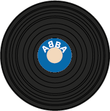

ABBA is al jarenlang wereldwijd bekend. Ze zijn bekend geworden door hun winst bij het songfestival in 1974 voor Zweden. ABBA is zelf al jaren gestopt met muziek maken, maar na al deze jaren zijn ze nog steeds bekend van vele bekende liedjes waaronder: waterloo, mamma mia, gimme gimme gimme en nog veel meer, er zijn zelfs films gemaakt over de bekende band en hologrammen van ABBA treden nog steeds op in london tot deze dag.
